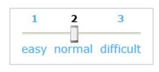

<!--
<div id="slider-bg" title="level">
  <div id="slider-handler">
    
  </div>
</div>


<p id="slider-description">
  Puede usar las teclas derecha/izquierda para cambiar el nivel.
</p>
<span id="slider-label">Nivel:</span>
<div id="slider-rail">
  <button id="slider-handler" role="slider" aria-labelledby="slider-label" aria-describedby="slider-description"
    aria-valuemin="1" aria-valuemax="3" aria-valuenow="2"></button>
</div>
-->
<!-- https://midu.dev/css-scroll-snap-la-solucion-definitiva-a-la-creacion-de-sliders-en-la-web-parte-ii/-->
<!-- Barra de navegación responsive y accesible con HTML, CSS y JS | Diseño adaptativo - flexbox de Yoelvis Mule en youtube -->

<!DOCTYPE html>
<html>

<head>
  <meta name="viewport" content="width=device-width, initial-scale=1">
  <style>
    .slider {
      display: flex;
      width: 100%;
      height: 100vh;
      overflow-x: scroll;
      /* Vamos a añadir esto 👇 */
      scroll-snap-type: x mandatory;
    }

    .img {
      flex: 0 0 100%;
      width: 100%;
      object-fit: cover;

      /* Vamos a añadir esto 👇 */
      scroll-snap-align: center;
    }
  </style>
</head>

<body>
  <div class="slider">
    
    
    
  </div>

</body>

</html>